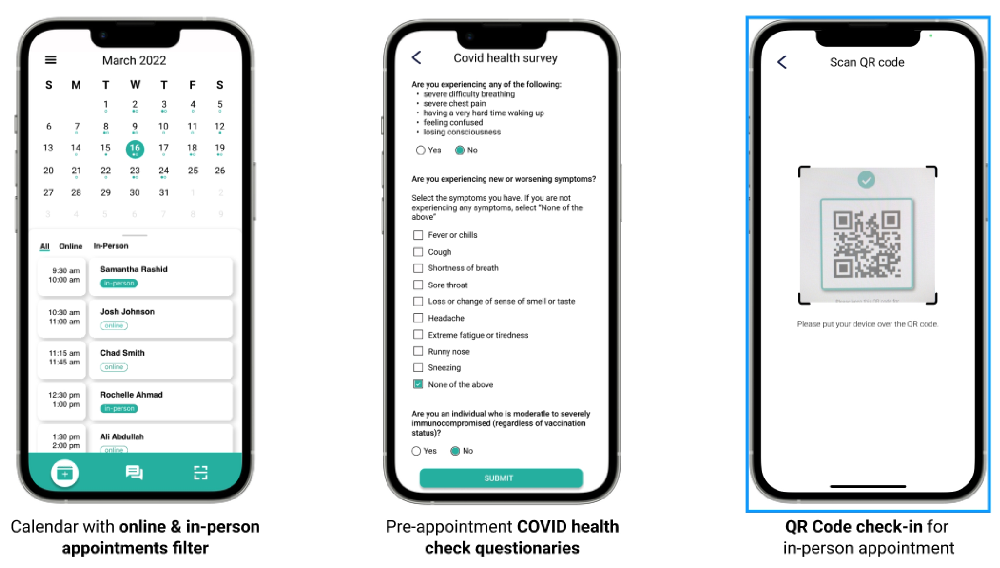

Interface App Design
Skills
User interviews, Personas, Usability Testing, Collaboration, Wireframes
Tools
Figma, Illustrator, Zoom
Timeline
5 Weeks
Team
Mark Soh, Christy Fang, Harneet Kang

My Role
I worked as a UX/UI Designer for this project. My responsibilities included:
- Conducting user interviews
- User testing and evaluation
- Design Iterations
Overview
In this collaborative project, I teamed up with two colleagues to craft an innovative mobile app user interface tailored to support family physicians in effectively connecting with patients amidst the challenges posed by the COVID-19 pandemic.
Design Focus
We were tasked with finding an issue that arose from the challenges of Covid-19. As a group, we decided to focus on the healthcare sector. We slowly then developed our idea to address the issues of patients meeting doctors during the pandemic
User Research
We conducted research with 2 family physicians. Our methodology for conducting the user interviews was through Zoom.The 1st physician was 32 years old representing the younger demographic of family physicians. The 2nd physician was 55 years old representing the older demographic of family physicians. We wanted to choose physicians with different age ranges as it gives different perspectives and challenges each of them face due to their age groups.
Findings
In our findings, physicians highlight the difficulties in creating an effective system for scheduling online consultations and managing patient records, all while minimizing physical space contact to ensure safety for everyone.
App Features
From the personas, we then created some solution features to address the problems the physicians were facing. Firstly, the introduction of an integrated calendar page provided patients with a comprehensive overview of both their online and in-person appointments. This not only facilitated better organization for patients but also streamlined communication for doctors. By simply clicking on a patient's appointment, doctors could initiate direct SMS communication, fostering more seamless and accessible doctor-patient interaction.
Secondly, our app's COVID survey questions page incorporated a QR code feature. After completing the survey, patients could generate a QR code on their phones. This QR code became an essential tool during in-person appointments, where physicians could effortlessly scan it, gaining immediate insights into the patient's COVID status. This innovative use of QR codes added an extra layer of safety and confidence for doctors, ensuring that in-person appointments were conducted with a clear understanding of the patient's health status
Usability Testing
The study employs both online testing, facilitated by Protopie link sharing, and in-person testing through face-to-face observation. Participants include those with medical experience (doctors, medical students/interns) and those without (patients, general public), offering a diverse range of perspectives for evaluation.
Design Issue 1
When the user tried to check out what is coming in the next few days through the calendar home page, she was forced to click on each date in order to see the events. Current design doesn’t allow users to get a weekly preview and takes them extra effort to learn the up-coming appointments.
Design Issue 2
All of our users identified the same issue which was the lack of access to patient records. This is an isue because as a medical professional when meeting with a patient it is important to have a thorough understanding of the patients past medical history. The current patient detail page only displays notes and a few past symptoms. Even though the notes can be edited it is still not enough for a doctor to get a better understanding of the patients previous health.
Iterations
From the usability testings, we made sure there's a direct connection between patient records and a detailed information page. By clicking on the patient's name or image, users can seamlessly navigate to the records page, which provides comprehensive details including medication history, allergies, conditions, procedures, and more. To enhance user navigation, the addition of dots under each date serves as an indicator of upcoming events. Furthermore, a visual cue is incorporated where a solid circle signifies in-person appointments and a hollow circle indicates online appointments, aligning with corresponding tags for easy interpretation. We also allow the users to view the appointments weekly or monthly by a collapsible element indicated by the grey line.

Final Designs
Final Design Demo
View DemoTakeway
Prior to this project I was always designing on my own but this project was an excellent opportunity and experience to work with a group. The collaboration in-person and online through Zoom calls and Figma help me realize to embrace diversity within a team. It's an asset that contributes to a well-rounded approach to problem-solving as our group constructing ideas collaboratively and addresses challenges from diverse perspectives.
One takeway from this project is the importance of user-testing. User-testing gave us valauble insights on how actual users interact with and perceive our app. They help us discover problems or painpoints within the app. The feedback allow us to make alot of refinements and improvements to enhance the overall user experience of our app.